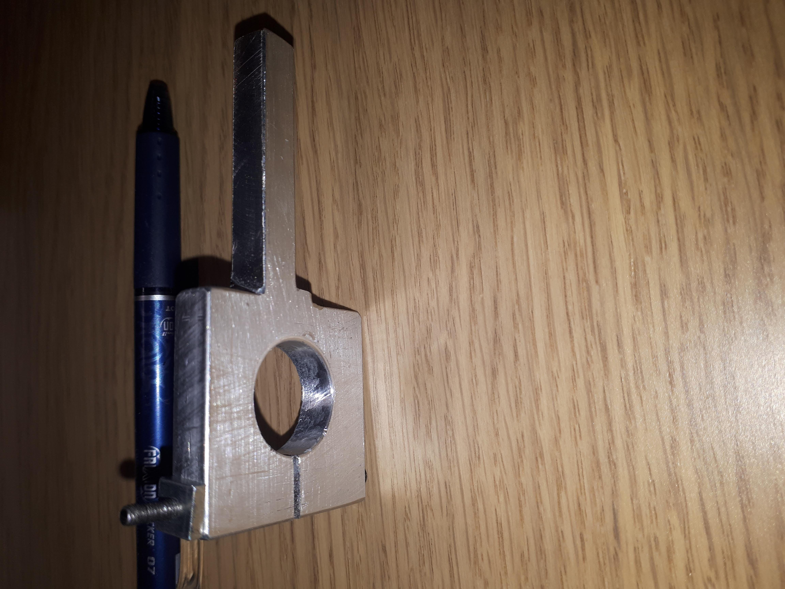
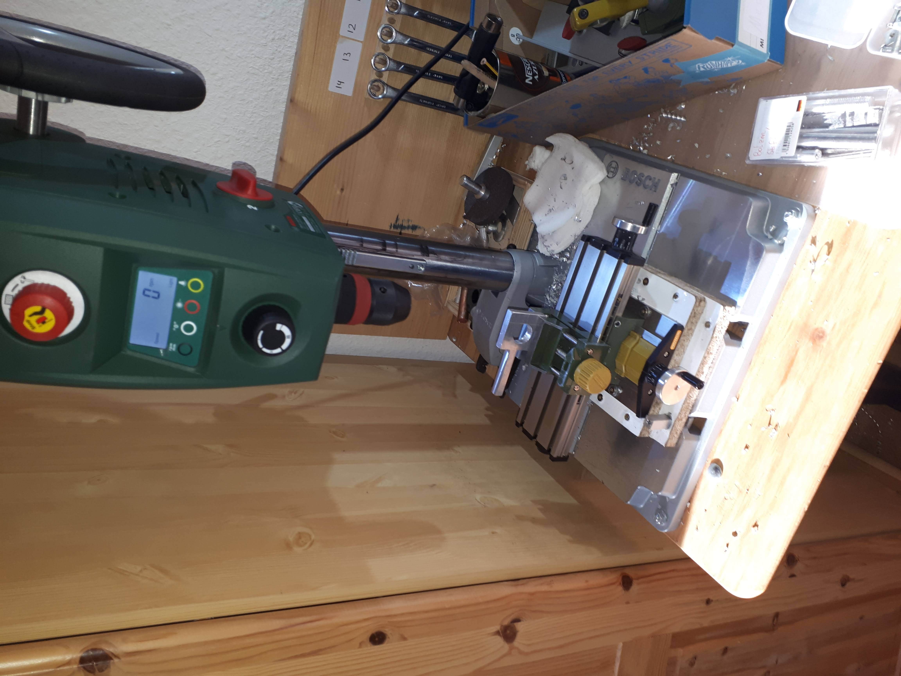
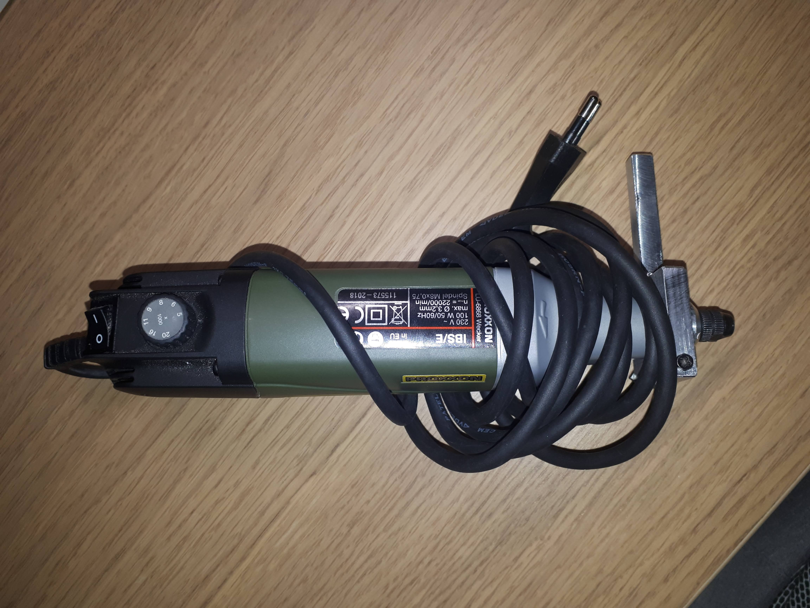
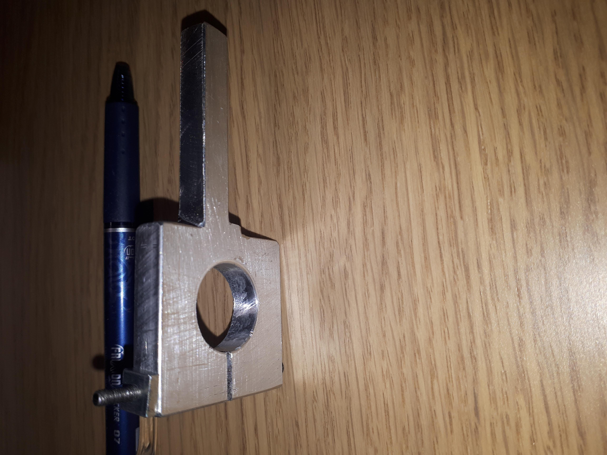
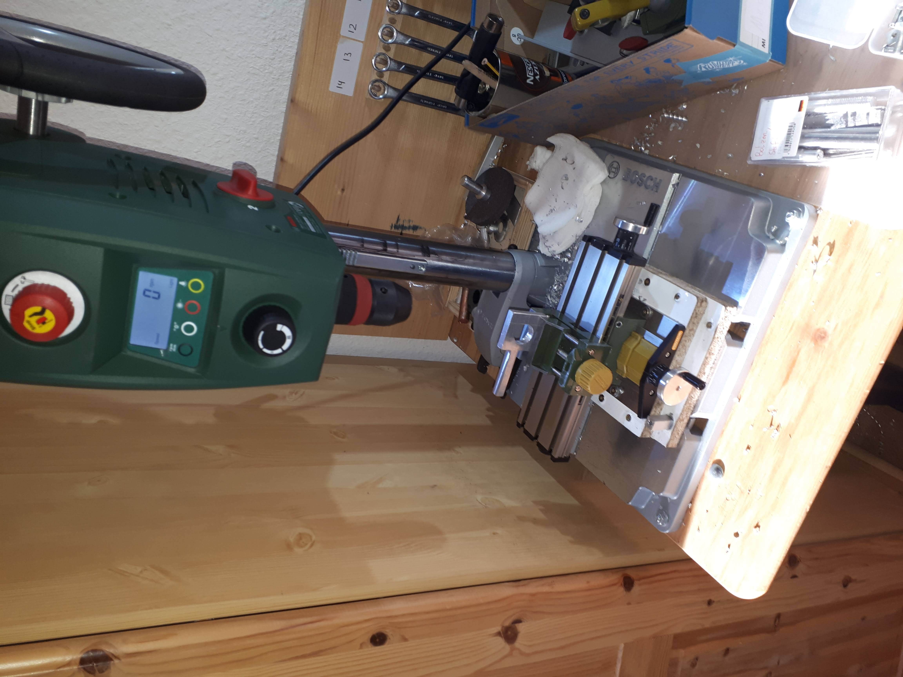
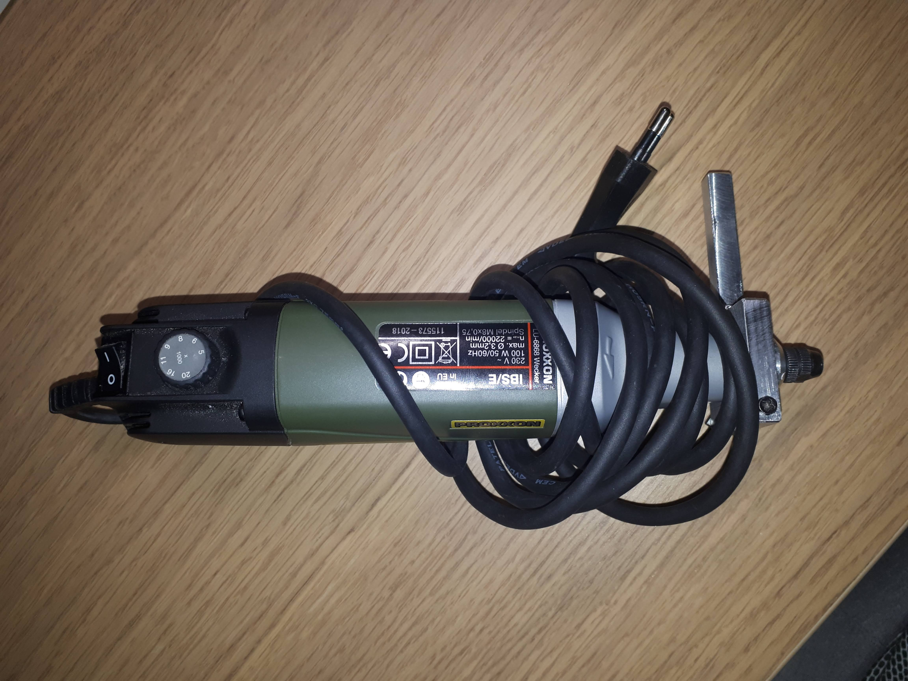
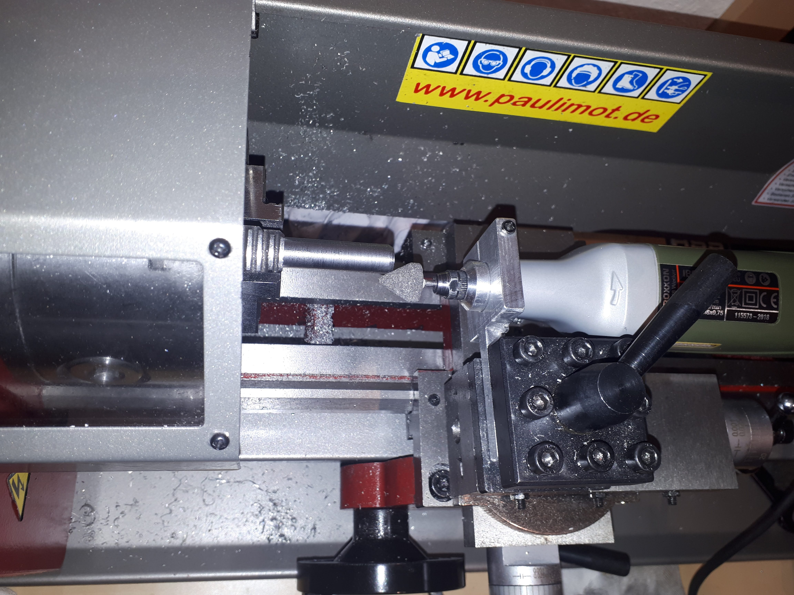

Home
Dremel Tool Holder for the Lathe - 2022
I had this Proxxon IBS/E Dremel Tool laying around,
and was wondering how to use it on the Lathe.
It was easy to make a Toolholder using the Lathe and
Drill Press.
The Bore is about 19.8 mm. The Part going in the Toolholder
is around 8mm thick, the regular size for this Lathe.
The important part is that the center of the bore
should be on the line created by the top of the toolholder.
This is so that the axis of the Dremel is on the same height
as the axis of the Lathe.
 





Project in Use
FreeCAD Model
 FreeCAD Model
FreeCAD Model